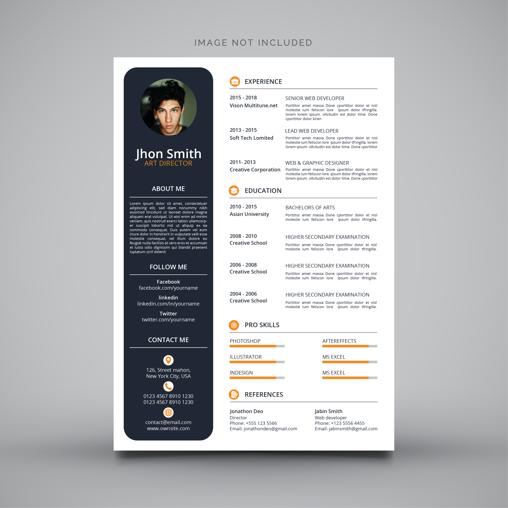

MODÈLES
UNE VARIÉTÉ DE MODÈLES DE CV



Commencez par compléter un formulaire ergonomique et intuitif.

Explorez plusieurs modèles en temps réel : minimaliste, moderne...
Téléchargez votre CV au format PDF et sauvegardez vos informations.
pour des usages plus professionnels : bannières YouTube, post Facebook, etc. Nombreux designs prêts à l’emploi, très créatif !
Flavien le Journaliste
Facile à utiliser et rapide, CVDesign m'a aidé à décrocher mon job de rêve !
Marie la Designer
Un outil indispensable pour créer un CV percutant en quelques minutes.
Jean le Développeur
Très intuitif, j’ai pu personnaliser mon CV en toute simplicité.
Sophie la RH
Des modèles modernes et variés pour tous les secteurs d’activité.
Paul le Consultant
Un CV(Curriculum Vitae) est un document qui resume le parcours professionel, les competences, les formations et les experiences d’une personne.
Oui, notre générateur vous permet de créer et d’exporter votre CV gratuitement. Certaines fonctionnalités avancées, comme des modèles premium ou un hébergement personnalisé, peuvent nécessiter un abonnement.
Oui, vous pouvez modifier la mise en page, les couleurs, les polices et ajouter des sections personnalisées. Notre outil vous permet d’adapter votre CV selon vos préférences et votre secteur d’activité.
Oui, une option vous permet d’exporter votre CV au format PDF en un clic. Cela garantit un rendu propre et professionnel, compatible avec tous les recruteurs et plateformes d’emploi.
Bien sûr ! Vous pouvez revenir à tout moment pour éditer votre CV, ajouter de nouvelles expériences, modifier les informations ou ajuster la mise en page. Une nouvelle version sera alors générée instantanément.